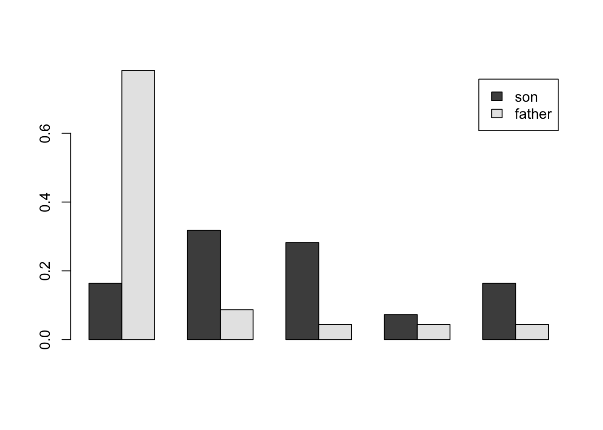
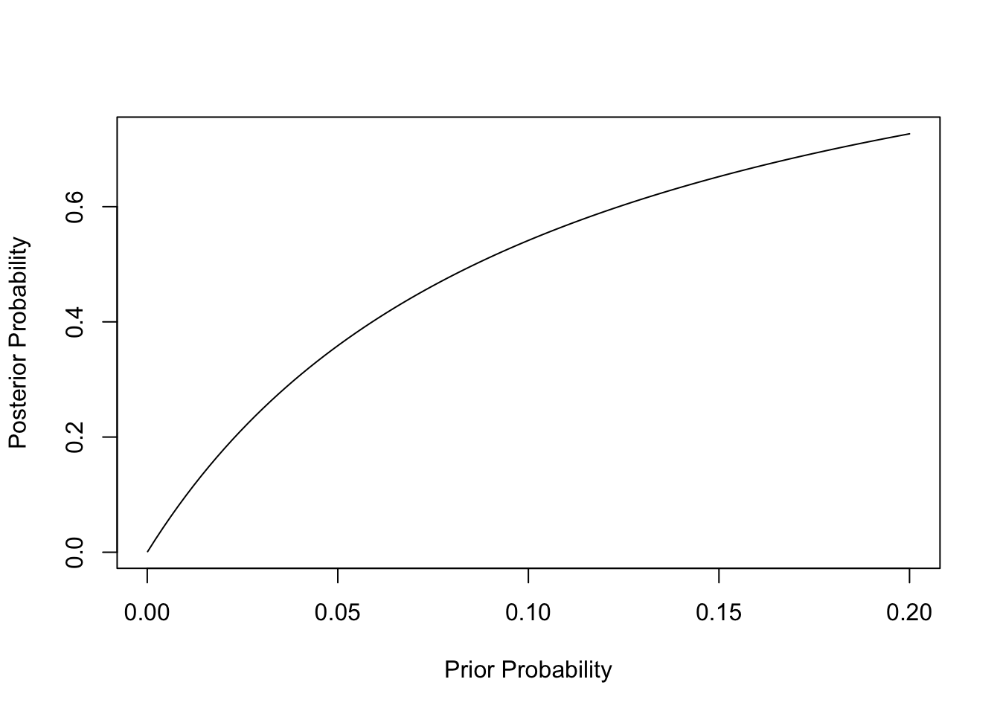
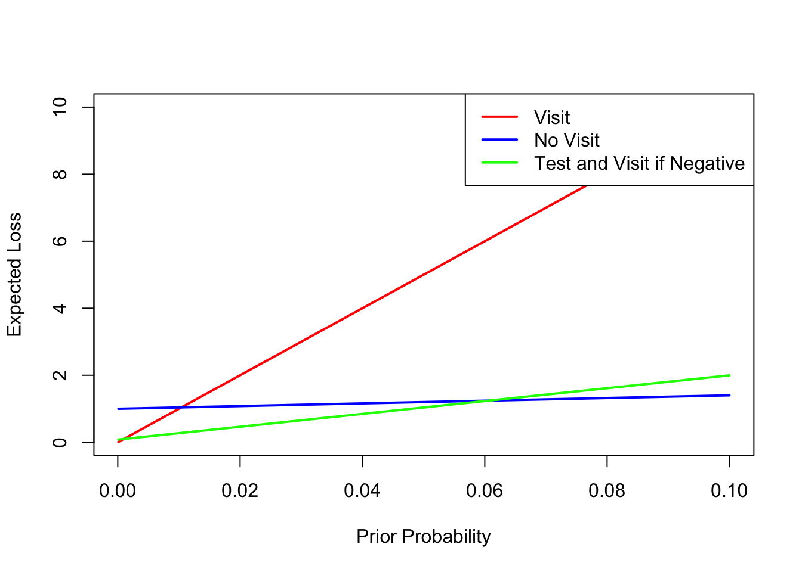

d = data.frame(def0=c(8940,651,76),def1=c(64,136,133),row.names = c("bal1","bal2","bal3"))
apply(d,2,sum)/10000 def0 def1
0.967 0.033 Exercise 1 (Joint Distributions) A credit card company collects data on \(10,000\) users. The data contained two variables: an indicator of he customer status: whether they are in default (def =1) or if they are current with their payments (def =0). Moreover, they have a measure of their loan balance relative to income with three categories: a low balance (bal=1), medium (bal=2) and high (bal=3). The data are given in the following table:
| def | ||
| bal | 0 | 1 |
| 1 | 8,940 | 64 |
| 2 | 651 | 136 |
| 3 | 76 | 133 |
def =1Solution:
d = data.frame(def0=c(8940,651,76),def1=c(64,136,133),row.names = c("bal1","bal2","bal3"))
apply(d,2,sum)/10000 def0 def1
0.967 0.033 bal given def =1 is given by the ratio of the joint (elements of the table) to the marginal (sum of the def =1 column)d[,"def1"]/sum(d[,"def1"])[1] 0.19 0.41 0.40def =1, given balance. \[
P(def\mid bal) = \frac{P(def \text{ and } bal)}{P(bal)}
\]balmarginal = apply(d,1,sum)
d1b3 = d["bal3","def1"]/balmarginal["bal3"]
d1b1 = d["bal1","def1"]/balmarginal["bal1"]
print(d1b3)bal3
0.64 print(d1b1) bal1
0.0071 # The ratio is
d1b3/d1b1bal3
90 Person with high balance has 63% chance of being in default, while a person with low balance has 0.7% chance of being in default, 90-times less likely!
Exercise 2 (Marginal) The table below is taken from the Hoff text and shows the joint distribution of occupations taken from a 1983 study of social mobility by Logan (1983). Each cell is P(father’s occupation, son’s occupation).
d = data.frame(farm = c(0.018,0.002,0.001,0.001,0.001),operatives=c(0.035,0.112,0.066,0.018,0.029),craftsman=c(0.031,0.064,0.094,0.019,0.032),sales=c(0.008,0.032,0.032,0.010,0.043),professional=c(0.018,0.069,0.084,0.051,0.130), row.names = c("farm","operative","craftsman","sales","professional"))
d %>% knitr::kable()| farm | operatives | craftsman | sales | professional | |
|---|---|---|---|---|---|
| farm | 0.02 | 0.04 | 0.03 | 0.01 | 0.02 |
| operative | 0.00 | 0.11 | 0.06 | 0.03 | 0.07 |
| craftsman | 0.00 | 0.07 | 0.09 | 0.03 | 0.08 |
| sales | 0.00 | 0.02 | 0.02 | 0.01 | 0.05 |
| professional | 0.00 | 0.03 | 0.03 | 0.04 | 0.13 |
Solution:
apply(d,1,sum) farm operative craftsman sales professional
0.110 0.279 0.277 0.099 0.235 apply(d,2,sum) farm operatives craftsman sales professional
0.023 0.260 0.240 0.125 0.352 d["farm",]/sum(d["farm",]) farm operatives craftsman sales professional
farm 0.16 0.32 0.28 0.073 0.16d[,"farm"]/sum(d[,"farm"])[1] 0.783 0.087 0.043 0.043 0.043dd = data.frame(son=as.double(d["farm",]/sum(d["farm",])),father=as.double(d[,"farm"]/sum(d[,"farm"])))
barplot(height = t(as.matrix(dd)),beside=TRUE,legend=TRUE)
The bar chart allows us to visualize the marginal distributions of occupations of fathers and sons. The striking feature of this chart is that in the sons, the proportion of farmers has greatly decreased and the proportion of professionals has increased. From Part d, we see that of the sons who are farmers, 78% had fathers who are farmers. On the other hand, Part c shows that only 16% of the fathers who farmed produced sons who farmed. This is higher than the 2.3% of sons in the general population who became farmers, showing that sons of farmers went into farming at a rate higher than the general population of the study. However, most of the sons of farmers went into another profession. There was a great deal of movement out of farming and very little movement into farming from the fathers’ to the sons’ generation.
To determine the validity of inference outside the sample, we would need to know more about how the study was designed. We do not know how the sample was selected or what steps were taken to ensure it was representative of the population being studied. We also are not given the sample size, so we don’t know the accuracy of our probability estimates. The paper from which the table was taken, cited in the problem, provides more detail on the study.
Exercise 3 (Joint and Conditional) A cable television company has \(10000\) subscribers in a suburban community. The company offers two premium channels, HBO and Showtime. Suppose \(2750\) subscribers receive HBO and \(2050\) receive Showtime and \(6200\) do not receive any premium channel.
You now obtain a new dataset, categorized by gender, on the proportions of people who watch HBO and Showtime given below
| Cable | Female | Male |
|---|---|---|
| HBO | 0.14 | 0.48 |
| Showtime | 0.17 | 0.21 |
Solution:
10000 - 6200 - 2750 - 2050[1] -1000Thus, the answer is \(1000/10000 = 0.1\).
Exercise 4 (Conditionals and Expectations) The following probability table describes the daily sales volume, \(X\), in thousands of dollars for a salesperson for the number of years \(Y\) of sales experience for a particular company.
| Y | ||||
|---|---|---|---|---|
| X | 1 | 2 | 3 | 4 |
| 10 | 0.14 | 0.03 | 0.03 | 0 |
| 20 | 0.05 | 0.10 | 0.12 | 0.07 |
| 30 | 0.10 | 0.06 | 0.25 | 0.05 |
Solution:
Exercise 5 (Marjorie Visit) Marjorie is worried about whether it is safe to visit a vulnerable relative during a pandemic. She is considering whether to take an at-home test for the virus before visiting her relative. Assume the test has sensitivity 85% and specificity 92%. That is, the probability that the test will be positive is about 85% if an individual is infected with the virus, and the probability that test will be negative is about 92% if an individual is not infected.
Further, assume the following losses for Marjorie
| Event | Loss |
|---|---|
| Visit relative, not infected | 0 |
| Visit relative, infected | 100 |
| Do not visit relative, not infected | 1 |
| Do not visit relative, infected | 5 |
Solution:
| Condition | Positive | Negative |
|---|---|---|
| Disease present | 0.85 | 0.15 |
| Disease absent | 0.08 | 0.92 |
Prior Probability: P(Disease present) = 0.002 and P(Disease absent)=0.998
We can calculate the posterior probability that the individual has the disease as follows:
First, we calculate the probability of a positive test (this will be the denominator of Bayes Rule):
P(Positive) = P(Positive | Present) * P(Present)+P(Positive | Absent) * P(Absent) = 0.850.002 + 0.080.998 = 0.08154
Then, we calculate the posterior probability that the individual is has the disease by applying Bayes rule:
P(Present | Positive) = P(Positive | Present) * P(Present)/P(Positive) = 0.85*0.002/0.08154 = 0.0208
The posterior probability that an individual who tests positive has the disease is 0.0208.
| Condition | Positive | Negative |
|---|---|---|
| Condition present0.85 | 0.15 | |
| Disease absent | 0.08 | 0.92 |
But the prior probability is different:
P(Disease present) = 0.00015 and P(Disease absent)=0.99985
Again, we calculate the probability of a positive test (this will be the denominator of Bayes Rule):
P(Positive) = P(Positive | Present) * P(Present)+P(Positive | Absent) * P(Absent) = 0.850.00015 + 0.080.99985 = 0.0801155
Then, we calculate the posterior probability that the individual is has the disease by applying Bayes rule:
P(Present | Positive) = P(Positive | Present) * P(Present)/P(Positive) = 0.85*0.00015/0.0801155 = 0.00159
The posterior probability that an individual who tests positive has the disease is 0.00159.
In both cases, the posterior probability that the individual has the disease is small, even after taking the at-home test. But it is important to note that the probability has increased by more than a factor of 10, from 2 in 1000 to more than 2% in the first case, and from 15 in 100,000 to more than 15 in 10,000 in the second case. When the prior probability is lower, so is the posterior probability.
Some students who are inexperienced with Bayesian reasoning are surprised at how small the posterior probability is after a positive test. Untrained people often expect the probability to be closer to 85%, the sensitivity of the test. I have found that a good way to explain these results to people who have trouble with it is to ask them to imagine a population of 100,000 people. For part a, we would expect 200 have the disease. Of these, we expect about 85%, or 170 people, to test positive, and 15%, or only 30 people, to test negative. So the test identified most of the ill people. But now let’s consider the 99,800 people who do not have the disease. We expect only 8% of these to test positive, but this is 7984 people testing positive. We expect 92%, or 91,816 people, to test negative. Of those who test positive, 170 have the disease and 7,984 do not. So even though most ill people test positive and most well people test negative, because there are so many more people who do not have the disease, most of the ones testing positive actually do not have the disease.
A helpful way to visualize the role of the prior probability is to plot the posterior probability as a function of the prior probability (this was not required as part of the assignment). For prior probabilities near zero, a positive test increases the probability of the disease, but it remains very low because the positives are dominated by false positives. But once the prior probability reaches 10%, there is a better than even chance that someone testing positive has the disease; at a 20% prior probability, the posterior probability is over 70%.
p = seq(0.0001, 0.2, length.out = 100)
posterior = 0.85*p/(0.85*p + 0.08*(1-p))
plot(p, posterior, type = "l", xlab = "Prior Probability", ylab = "Posterior Probability")
High prevalence: P(Present) = 0.002 and P( Absent ) = 0.998
Low prevalence: P(Present) = 0.00015 and P( Absent ) = 0.99985
To calculate EVSI, we do the following:
Calculate the expected loss if we do not do the test. To do this, we use the prior probability to calculate the expected loss if we visit and if we don’t. The minimum of these is the expected loss if we do not do the test.
EL[visit] = 100p + 0(1-p)
EL[no visit] = 5p + 1(1-p)
Here, p is either 0.002 (part a) or 0.00015 (part b)
Calculate the expected loss if we do the test as follows:
Now, the EVSI is how much doing the test reduces our expected loss:
EVSI = E(L | no test) - E(L | test)
We will now apply these steps for the two base rates. The table below shows the results.
| High prevalence | Low prevalence | |
|---|---|---|
| Probability of positive test | 0.08154 | 0.08012 |
| Posterior probability of disease given positive test | 0.0208 | 0.00159 |
| Posterior probability of disease given negative test | 0.00033 | 0.0000245 |
| Expected loss – no test | Visit: 0.2 No visit: 1.008 | Visit: 0.015 No visit: 1.0006 |
| Expected loss if positive | Visit: 2.0849 No visit: 1.0834 | Visit: 0.15915 No visit: 1.00637 |
| Expected loss if negative | Visit: 0.03266 No visit: 1.00131 | Visit: 0.00245 No visit: 1.0001 |
| Expected loss with test | 0.11834 | 0.015 |
| Expected loss – no test | Visit: 0.2 No visit: 1.008 | Visit: 0.015 No visit: 1.0006 |
| EVSI | 0.2-0.11834 = 0.08166 | 0.015-0.015 = 0 |
In the high prevalence case, it is better to test and follow the test result. The EVSI is 0.08166; there is 0.08166 lower loss from testing than from not testing. In the low prevalence case, however, the optimal decision is to visit no matter what the result of the test, because the posterior probability is so low even if the test is positive. Therefore, the expected loss is the same for doing or not doing the test because we ignore the test result and visit anyway. Therefore, the EVSI is zero in the low prevalence case.
If we do not do the test, we cannot use the test result, so we have two choices: visit or do not visit. The expected loss of visiting is: E(L|V) = 100p + 0(1-p) = 100p
The expected loss of not visiting (lose 5 if ill, 1 if not ill): E(L|N) = 5p + (1-p)
Now consider the strategy of doing the test and visiting if the test is negative. We get the following losses
| Patient status | Test result | Action | Loss (L) | Probability |
|---|---|---|---|---|
| No disease | Negative | visit | 0 | (1-p)*0.92 |
| No disease | Positive | no visit | 1 | (1-p)*0.08 |
| Disease | Negative | visit | 100 | p*0.15 |
| Disease | Positive | no visit | 5 | p*0.85 |
The total expected loss of this strategy is:
E(L|T) = 0 + 10.08(1-p) + 1000.15p + 5*0.85p = 0.08 + 19.17p
Find strategy regions. With a little algebra, we can find where the lines intersect and then find the regions of optimality. These are:
| Range | Policy |
|---|---|
| \(0 \le p < 0.00099\) | Optimal policy is visit regardless of test |
| \(0.00099 < p < 0.0606\) | Optimal policy is to do the test and visit if negative |
| \(0.0606 < p \le 1\) | Optimal policy is to stay home regardless of test |
The graph below shows the plots of expected loss for the three policies. I show results only for probabilities up to 0.1 in order to have a better view of the results for small probabilities.
p = seq(0.0001, 0.1, length.out = 100)
ELV = 100*p
ELN = 5*p + (1-p)
ELT = 0.08 + 19.17*p
plot(p, ELV, type = "l", xlab = "Prior Probability", ylab = "Expected Loss", col = "red", lwd = 2)
lines(p, ELN, col = "blue", lwd = 2)
lines(p, ELT, col = "green", lwd = 2)
legend("topright", legend = c("Visit", "No Visit", "Test and Visit if Negative"), col = c("red", "blue", "green"), lwd = 2)
Therefore, in the range of values 0.00099 < p < 0.0606, doing the test has lower expected loss than either just visiting or just staying home. For the high prevalence situation, the prior probability of 0.002 is larger than 0.00099 and lower than 0.0606, so it is optimal to take the test and follow the result. For the low prevalence situation, the prior probability of 0.00015 is below 0.00099, and it is optimal just to visit without considering the test. That is, in very low prevalence situations, there is no point in doing the test, because even if it is positive, the posterior probability would still be low enough that it is optimal to visit. On the other hand, if Marjorie is experiencing symptoms or knows she has been exposed, that would increase the probability of having the disease. Even in a low prevalence situation, if symptoms or exposure increase the prior probability to above 0.00099 but below 0.0606, then she should take the test and follow the result. If symptoms or exposure increase the prior probability to above 0.0606, then she should not bother with the test and just stay home.